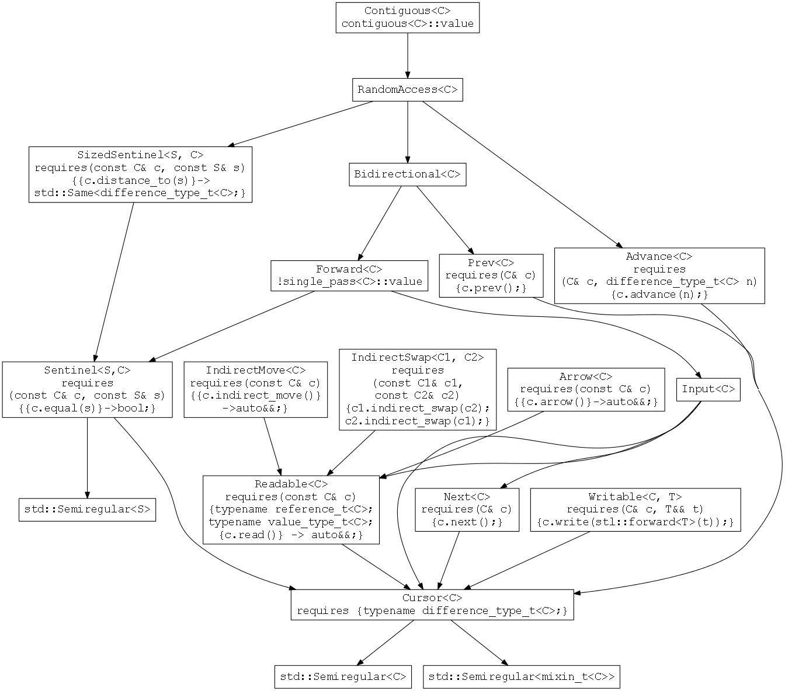

| Doc. no.: | D0186R0 |
| Date: | 2016-01-13 |
| Project: | To be decided |
| Reply to: | Beman Dawes <bdawes at acm dot org> Eric Niebler <eric dot niebler at gmail dot com> Casey Carter <casey at carter dot net> |
TODO List
basic_iterator constructors need descriptions.using assoc_t = detail::iterator_associated_types_base<C>;. Need to use weasel wording like "appropriate to the iterator category", etc. to avoid leaking implementation details or other over-specification.basic_iterator function descriptions against the current cmcstl2 codebase."We are what we pretend to be, so we must be careful about what we pretend to be." - Kurt Vonnegut
Summary: Proposes a library component for easily creating conforming iterators. Based on existing practice. Depends only on the C++17 working paper plus Concepts TS and Ranges TS. Breaks no existing code or ABI's. Two open-source implementations including test suites available. Draft wording provided.
TBS
Iterators that conform to the requirements of the C++ standard library are tedious to write and difficult to write correctly. They are tedious to write because although they need only a few core functions, they also need subsidiary types, functions, and other boilerplate. Conforming iterators are difficult to write correctly because each iterator category has a subtly differing set of requirements, making it all too easy to get subsidiary types, functions, or other boilerplate wrong.
A class template that is given a few implementation functions can generate the facade (i.e. public interface and private implementation) for a fully conforming iterator, including all boilerplate. Boost iterator_facade pioneered this approach and has been in wide use since 2001[1]. It eases writing conforming iterators and has proven less error prone than hand-coded iterators. The generated iterator conforms to an extended set of requirements based on the C++98 iterator requirements. Others, such as Chandler Carruth's LLVM iterator_facade_base[2], have provided similar classes inspired by the Boost library.
This paper proposes an iterator facade class template for the standard library, useful by any programmer (novice, experienced, or expert) wishing to easily create a conforming iterator. The proposal uses C++11/14/17 with concepts[3] and ranges[4] to allow straightforward specification and implementation, and to ensure that the generated iterator is actually conforming. The proposal breaks no existing code and breaks no existing ABI's. Two open-source implementations with test suites are available on GitHub[5][6].
The proposal is suitable for C++17 if C++17 includes concepts and ranges. Otherwise, the proposal is suitable for the Ranges TS. No other core language or library changes are required.
A 2004 proposal[7] based on Boost iterator_facade failed because it depended on an iterator update proposal[8] that failed because without concepts the language was not rich enough to express the necessary iterator requirements.
TBS
iterator_facade as a role modelThis ensures that the proposal represents existing practice in widespread use.
This eliminates the difficulties with specification that bedeviled the 2004 proposal. It allows an interface specification that ensures that the resulting iterator is actually conforming. It improves error message quality when a user makes a mistake.
Cursor mixins have proven themselves useful time and again. That said, it's a curiously indirect way of defining an iterator's interface. The alternative of inheriting directly from the Cursor leads to interface pollution. Cursors are implementation details and they should stay hidden.
Editorial comments are shown in italics with a light grey background.
Proposed wording is relative to the Working Draft, C++ Extensions for Ranges
Throughout this proposed wording, namespace qualification in the form ranges:: is used as a placeholder pending a decision as to the final target for this proposal. If the target is the Ranges TS, ranges:: will be replaced editorially by std::experimental::ranges::. If the target is the standard itself, ranges:: will be replaced by std::, assuming the standard library itself does not introduce namespace versioning.
Add the following proposed wording as a new Iterator adapter at the end of 24.8 Iterator adaptors [iterators.predef]:
Class template basic_iterator is an iterator adaptor that iterates over a sequence provided by a cursor type. [Note: basic_iterator eases creation of conforming iterators because cursors are simpler to create than iterators. -- end note] Cursors are implementation details of a basic_iterator instantiation that are encapsulated as mixins so that they are hidden from users of the instantiation.
[Example:
TBS
-- end example]
A cursor C may extend the interface of basic_iterator<C> by defining a nested mixin type C::mixin. In that way, the author of a cursor can non-intrusively add members and constructors to basic_iterator. If a cursor does not define a nested mixin type, a default mixin type will be provided.
[Note: By publicly inheriting from a mixin type parameterized by the cursor type,
basic_iteratorgets access to the cursor object, and, optionally, additional members such as constructors. -- end note]
This sub-clause has three major sub-sections:
cursor describes cursor types.basic_mixin describes mixin types.basic_iterator describes basic_iterator.Namespace cursor provides a scope for the type traits, concepts, and other traits needed to describe cursor types.
Which cursor concepts are satisfied by a user-supplied cursor type is determined by its members. The relationship between a cursor type's member, the cursor concept that requires it, and a summary of the cursor concept's requirement for the member are shown by the following table. The table is informational; the actual requirements are given by the concept descriptions that follow.
| Member name |
Required by Concept |
Cursor member requirement summary |
read |
Readable<C> |
requires(const C& c)
{{c.read()} -> auto&&;
typename reference_t<C>;
typename value_type_t<C>;} |
arrow |
Arrow<C> |
requires(const C& c)
{{c.arrow()} -> auto&&;} |
next |
Next<C> |
requires(C& c) {c.next();} |
prev |
Prev<C> |
requires(C& c) {c.prev();} |
indirect_move |
IndirectMove<C> |
requires(const C& c)
{c.indirect_move();} |
indirect_swap |
IndirectSwap<C1,
C2> |
requires(const C1& c1, const C2& c2)
{c1.indirect_swap(c2);
c2.indirect_swap(c1);} |
advance |
Advance<C> |
requires(C& c, difference_type_t<C> n)
{c.advance(n);} |
write |
Writable<C, T> |
requires(C& c, T&& t)
{c.write(range::forward<T>(t));} |
distance_to |
SizedSentinel<S,
C> |
requires(const C& c, const S& s)
{{c.distance_to(s)} ->
Same<difference_type_t<C>;} |
equal |
Sentinel<S, C> |
requires(const C& c, const S& s)
{{c.equal(s)}->bool;} |
single_pass::value |
Forward<C> |
bool single_pass::value default: =false |
contiguous::value |
Contiguous<C> |
is_reference<reference_t<C>>::value default: =false |
mixin |
Cursor<C> |
type mixin default: =basic_mixin<C> |
value_type |
Readable<C> |
type value_type default: =decay_t<reference_t<C>> |
Cursor members shown with defaults are only required if the default is not appropriate.
Possibly insert Cursor Concepts graph here?

namespace std {
namespace experimental {
namespace ranges {
inline namespace v1 {
namespace cursor {
// Cursor traits
// single_pass trait
template <class> constexpr bool single_pass = false;
template <class C>
requires requires {
typename C::single_pass;
requires bool(C::single_pass::value);
}
constexpr bool single_pass = true;
// contiguous trait
template <class> constexpr bool contiguous = false;
template <class C>
requires requires {
typename C::contiguous;
requires bool(C::contiguous::value);
}
constexpr bool contiguous = true;
// category trait
template <class>
struct category {};
template <Input C>
struct category<C> { using type = input_iterator_tag; };
template <Forward C>
struct category<C> { using type = forward_iterator_tag; };
template <Bidirectional C>
struct category<C> { using type = bidirectional_iterator_tag; };
template <RandomAccess C>
struct category<C> { using type = random_access_iterator_tag; };
template <Contiguous C>
struct category<C> { using type = ext::contiguous_iterator_tag; };
template <class C>
using category_t = typename category<C>::type;
// types
template <class C>
using mixin_t = see below;
template <class C>
requires see below
using value_type_t = see below;
template <class C>
using difference_type_t = see below;
template <class C>
requires
requires(const C& c) {{c.read()} -> auto&&;}
using reference_t = see below;
// concepts
template <class C>
concept bool Cursor();
template <class C>
concept bool Readable();
template <class C>
concept bool Arrow();
template <class C, class T>
concept bool Writable();
template <class S, class C>
concept bool Sentinel();
template <class S, class C>
concept bool SizedSentinel();
template <class C>
concept bool Next();
template <class C>
concept bool Prev();
template <class C>
concept bool Advance();
template <class C>
concept bool IndirectMove();
template <class C, class O>
concept bool IndirectSwap();
template <class C>
concept bool Input();
template <class C>
concept bool Forward();
template <class C>
concept bool Bidirectional();
template <class C>
concept bool RandomAccess();
template <class C>
concept bool Contiguous();
}}}}}single_pass [cursor.single]template <class> constexpr bool single_pass = false;
template <class C>
requires requires {
typename C::single_pass;
requires bool(C::single_pass::value);
}
constexpr bool single_pass = true;using single_pass = stl::true_type; is defined by a cursor to specify to basic_iterator that the cursor does not satisfy the cursor::ForwardIterator concept despited satisfying the cursor::InputIterator and cursor::EqualityComparable concepts.
contiguous [cursor.contig]template <class> constexpr bool contiguous = false;
template <class C>
requires requires {
typename C::contiguous;
requires bool(C::contiguous::value);
}
constexpr bool contiguous = true;using contiguous = stl::true_type; is defined by a cursor to specify to basic_iterator that the cursor satisfies the cursor::Contiguous concept if it also satisfies the cursor::RandomAccess concept.
These type traits are used in cursor concepts, traits, and in class basic_iterator to access types defined by cursors or deduced from the presence of cursor functions.
template <class C>
using mixin_t = see below; // used by concepts, etcType mixin_t is defined as C::mixin if type C::mixin is defined. Otherwise it is defined as basic_mixin<C>.
template <class C>
requires see below
using value_type_t = see below; // used by concepts, etc.The requires clause is satisfied if and only if Same<deduced_value_t<C>::type, decay_t<deduced_value_t<C>::type>>() would be satisfied.
Type value_type_t is defined as deduced_value_t<C>::type.
Remarks: template <class C> deduced_value_t; is an exposition only type defined as:
struct value_type<C> {using type = typename C::value_type;}; if C has a member value_type,struct value_type<C> {using type = decay_t<reference_t<C>>;}; if C does not have a member value_type and satisfies a requirement for reference_t<C>.struct deduced_value_t {};.template <class C>
using difference_type_t = see below; // used by concepts, etc.Type difference_type_t is defined as:
C::difference_type if C has a member difference_type,decltype(declval<const C&>().distance_to(declval<const C&>())) if C has such a distance_to member function,std::ptrdiff_t.template <class C>
requires
requires(const C& c) {{c.read()} -> auto&&;}
using reference_t = see below; // used by traits, etc.Type reference_t is defined as decltype(declval<const C&>().read()).
template <class C>
concept bool Cursor();Returns:
Semiregular<remove_cv_t<C>>()
&& Semiregular<mixin_t<remove_cv_t<C>>>()
&& requires {typename difference_type_t<C>;}.
template <class C>
concept bool Readable();Returns:
Cursor<C>() && requires(const C& c) {
{c.read()} -> auto&&;
typename reference_t<C>;
typename value_type_t<C>;
}.
template <class C>
concept bool Arrow();Returns:
Readable<C>()
&& requires(const C& c) {{c.arrow()} -> auto&&;}.
template <class C, class T>
concept bool Writable();Returns:
Cursor<C>()
&& requires(C& c, T&& t) {c.write(ranges::forward<T>(t));}.
Remarks: Not required to be equality-preserving.
template <class S, class C>
concept bool Sentinel();Returns:
Cursor<C>() && Semiregular<S>()
&& requires(const C& c, const S& s) {{c.equal(s)} -> bool;}.
template <class S, class C>
concept bool SizedSentinel();Returns:
Sentinel<S, C>()&& requires(const C& c, const S& s)
{{c.distance_to(s)} -> Same<difference_type_t<C>;}.
template <class C>
concept bool Next();Returns:
Cursor<C>() && requires(C& c) {c.next();}.
template <class C>
concept bool Prev();Returns:
Cursor<C>() && requires(C& c) {c.prev();}.
template <class C>
concept bool Advance();Returns:
Cursor<C>()
&& requires(C& c, difference_type_t<C> n) {c.advance(n);}.
template <class C>
concept bool IndirectMove();Returns:
Readable<C>()
&& requires(const C& c) {c.indirect_move()} -> auto&&;};.
template <class C1, class C2>
concept bool IndirectSwap();Returns:
Readable<C1>() && Readable<C2>()
&& requires(const C1& c1, const C2& c2)
{c1.indirect_swap(c2); c2.indirect_swap(c1);}.
Axiom: If
c1.read() == xandc2.read() == ythen after eitherc1.indirect_swap(c2)orc2.indirect_swap(c1),c1.read() == yandc2.read() == x. No diagnostic required.
template <class C>
concept bool Input();Returns:
Readable<C>() && Next<C>().
template <class C>
concept bool Forward();Returns:
Input<C>() && Sentinel<C, C>() && !single_pass<C>.
template <class C>
concept bool Bidirectional();Returns:
Forward<C>() && Prev<C>().
template <class C>
concept bool RandomAccess();Returns:
Bidirectional<C>()
&& Advance<C>() && SizedSentinel<C, C>().
template <class C>
concept bool Contiguous();Returns:
RandomAccess<C>() && contiguous<C>
&& is_reference<reference_t<C>>::value.
Add to 24.6, Header <experimental/ranges/iterator> synopsis [iterator.synopsis]:
// basic_mixin
template <Destructible T>
class basic_mixin;Continue to add to Basic Iterators [iterators.basic]:
basic_mixin [iterator.mixin]Class template basic_mixin describes a mixin type.
Class basic_mixin inherits from template parameter T or from an implementation-supplied base class that inherits from template parameter T.
[Note: Permitting an implementation-supplied base class gives an implementation latitude to perform empty base optimization if it so chooses. -- end note]
template <Destructible T>
class basic_mixin : protected see below {
public:
// constructors
constexpr basic_mixin()
noexcept(is_nothrow_default_constructible<T>::value)
requires DefaultConstructible<T>();
constexpr basic_mixin(const T& t)
noexcept(is_nothrow_copy_constructible<T>::value)
requires CopyConstructible<T>();
constexpr basic_mixin(T&& t)
noexcept(is_nothrow_move_constructible<T>::value)
requires MoveConstructible<T>();
// T object access
constexpr T& get() & noexcept;
constexpr const T& get() const& noexcept;
constexpr T&& get() && noexcept;
constexpr const T&& get() const&& noexcept;
};constexpr basic_mixin()
noexcept(is_nothrow_default_constructible<T>::value)
requires DefaultConstructible<T>();Effects: Default constructs an object of class
basic_mixin.
Postconditions:
get()returns a reference to a default constructed object or sub-object of typeT.
constexpr basic_mixin(const T& t)
noexcept(is_nothrow_copy_constructible<T>::value)
requires CopyConstructible<T>();Effects: Copy constructs an object of type
basic_mixin.
Postconditions:
get()returns a reference to a copy constructed object or sub-object of typeTwith same state ast.
constexpr basic_mixin(T&& t)
noexcept(is_nothrow_move_constructible<T>::value)
requires MoveConstructible<T>();Effects: Move constructs an object of type
basic_mixin.
Postconditions:
get()returns a reference to a move constructed object or sub-object of typeTwith the state ofranges::move(t).
T object access [mixin.access]The get member functions are permitted return a reference to either an object or a sub-object. [Note: This allows an implementation to return a reference to either a data member of type T or *this respectively, depending on implementation details. -- end note]
constexpr T& get() & noexcept;
constexpr const T& get() const& noexcept;Returns: A reference to the object or sub-object of type T created when
*thiswas constructed.
constexpr T&& get() && noexcept;
constexpr const T&& get() const&& noexcept;Returns:
std::move(x), wherexis a reference to the object or sub-object of type T created when*thiswas constructed..
Continue to add to Basic Iterators [iterators.basic]:
basic_iteratorClass template basic_iterator describes an iterator over a sequence. A basic_iterator instantiation satisfies concept ranges::Iterator. Which of the other iterator concepts will be satisfied is determined by which cursor concepts (reference) are satisfied by the basic_iterator template parameter C.
namespace std {
namespace experimental {
namespace ranges {
inline namespace v1 {
template <Cursor C>
class basic_iterator
: public mixin_t<C>
{
private:
// all private members for exposition only
using mixin = mixin_t<C>;
using mixin::get;
using assoc_t = see below;
using typename assoc_t::postfix_increment_result_t;
using typename assoc_t::reference_t;
using typename assoc_t::const_reference_t;
using difference_type = cursor::difference_type_t<C>;
public:
// constructors, assignments, and moves
basic_iterator() = default;
using mixin::mixin;
template <ConvertibleTo<C> O>
constexpr basic_iterator(basic_iterator<O>&& that)
noexcept(is_nothrow_constructible<mixin, O&&>::value);
template <ConvertibleTo<C> O>
constexpr basic_iterator(const basic_iterator<O>& that)
noexcept(is_nothrow_constructible<mixin, const O&>::value);
template <ConvertibleTo<C> O>
constexpr basic_iterator& operator=(basic_iterator<O>&& that) &
noexcept(is_nothrow_assignable<C&, O&&>::value);
template <ConvertibleTo<C> O>
constexpr basic_iterator& operator=(const basic_iterator<O>& that) &
noexcept(is_nothrow_assignable<C&, const O&>::value);
template <class T>
requires
!Same<decay_t<T>, basic_iterator>() &&
!cursor::Next<C>() &&
cursor::Writable<C, T>()
constexpr basic_iterator& operator=(T&& t) &
noexcept(noexcept(declval<C&>().write(static_cast<T&&>(t))));
friend constexpr decltype(auto) iter_move(const basic_iterator& i)
noexcept(noexcept(i.get().indirect_move()))
requires cursor::IndirectMove<C>();
template <class O>
requires cursor::IndirectSwap<C, O>()
friend constexpr void iter_swap(
const basic_iterator& x, const basic_iterator<O>& y)
noexcept(noexcept((void)x.indirect_swap(y));
// dereferences
constexpr decltype(auto) operator*() const
noexcept(noexcept(declval<const C&>().read()))
requires cursor::Readable<C>() && !detail::is_writable<C>;
constexpr decltype(auto) operator*()
noexcept(noexcept(reference_t{declval<mixin&>().get()}))
requires cursor::Next<C>() && detail::is_writable<C>;
constexpr decltype(auto) operator*() const
noexcept(noexcept(
const_reference_t{declval<const mixin&>().get()}))
requires cursor::Next<C>() && detail::is_writable<C>;
constexpr basic_iterator& operator*() noexcept
requires !cursor::Next<C>();
// operator->: "Manual" deduction override,
constexpr decltype(auto) operator->() const
noexcept(noexcept(declval<const C&>().arrow()))
requires cursor::Arrow<C>();
// operator->: Otherwise, if reference_t is an lvalue reference,
constexpr auto operator->() const // Otherwise, if reference_t is an lvalue reference
noexcept(noexcept(*declval<const basic_iterator&>()))
requires cursor::Readable<C>() && !cursor::Arrow<C>()
&& is_lvalue_reference<const_reference_t>::value;
// operator->: Otherwise, deduce if needed
constexpr auto operator->() const
noexcept(is_nothrow_move_constructible<
detail::operator_arrow_proxy<basic_iterator>>::value &&
noexcept(detail::operator_arrow_proxy<basic_iterator>{
*declval<const basic_iterator&>()}))
requires cursor::Readable<C>() && !cursor::Arrow<C>()
&& !is_reference<const_reference_t>::value;
// modifiers
constexpr basic_iterator& operator++() & noexcept;
constexpr basic_iterator& operator++() &
noexcept(noexcept(declval<C&>().next()))
requires cursor::Next<C>();
constexpr postfix_increment_result_t operator++(int) &
noexcept(is_nothrow_constructible<postfix_increment_result_t,
basic_iterator&>::value
&& is_nothrow_move_constructible<postfix_increment_result_t>::value
&& noexcept(++declval<basic_iterator&>()));
constexpr basic_iterator& operator--() &
noexcept(noexcept(declval<C&>().prev()))
requires cursor::Bidirectional<C>();
constexpr basic_iterator operator--(int) &
noexcept(is_nothrow_copy_constructible<basic_iterator>::value &&
is_nothrow_move_constructible<basic_iterator>::value &&
noexcept(--declval<basic_iterator&>()))
requires cursor::Bidirectional<C>();
constexpr basic_iterator& operator+=(difference_type n) &
noexcept(noexcept(declval<C&>().advance(n)))
requires cursor::RandomAccess<C>();
constexpr basic_iterator& operator-=(difference_type n) &
noexcept(noexcept(declval<C&>().advance(-n)))
requires cursor::RandomAccess<C>();
constexpr decltype(auto) operator[](difference_type n) const
noexcept(noexcept(*(declval<basic_iterator&>() + n)))
requires cursor::RandomAccess<C>();
// non-template type-symmetric ops to enable implicit conversions
friend constexpr difference_type operator-(
const basic_iterator& x, const basic_iterator& y)
noexcept(noexcept(y.get().distance_to(x.get())))
requires cursor::SizedSentinel<C, C>();
friend constexpr bool operator==(
const basic_iterator& x, const basic_iterator& y)
noexcept(noexcept(x.get().equal(y.get())))
requires cursor::Sentinel<C, C>();
friend constexpr bool operator!=(
const basic_iterator& x, const basic_iterator& y)
noexcept(noexcept(!(x == y)))
requires cursor::Sentinel<C, C>();
friend constexpr bool operator<(
const basic_iterator& x, const basic_iterator& y)
noexcept(noexcept(x - y))
requires cursor::SizedSentinel<C, C>();
friend constexpr bool operator>(
const basic_iterator& x, const basic_iterator& y)
noexcept(noexcept(x - y))
requires cursor::SizedSentinel<C, C>();
friend constexpr bool operator<=(
const basic_iterator& x, const basic_iterator& y)
noexcept(noexcept(x - y))
requires cursor::SizedSentinel<C, C>();
friend constexpr bool operator>=(
const basic_iterator& x, const basic_iterator& y)
noexcept(noexcept(x - y))
requires cursor::SizedSentinel<C, C>();
};
// basic_iterator nonmember traits
template <class C>
struct difference_type<basic_iterator<C>>
{ using type = cursor::difference_type_t<C>; };
template <cursor::Input C>
struct iterator_category<basic_iterator<C>>
{ using type = cursor::category_t<C>; };
template <cursor::Input C>
struct value_type<basic_iterator<C>>
{ using type = cursor::value_type_t<C>; };
// basic_iterator nonmember functions
template <_InstanceOf<basic_iterator> BI>
constexpr decltype(auto) get_cursor(BI&& i)
noexcept(noexcept(std::forward<BI>(i).get()));
template <class C>
constexpr basic_iterator<C> operator+(
const basic_iterator<C>& i, cursor::difference_type_t<C> n)
noexcept(is_nothrow_copy_constructible<basic_iterator<C>>::value &&
is_nothrow_move_constructible<basic_iterator<C>>::value &&
noexcept(declval<basic_iterator<C>&>() += n))
requires cursor::RandomAccess<C>();
template <class C>
constexpr basic_iterator<C> operator+(
cursor::difference_type_t<C> n, const basic_iterator<C>& i)
noexcept(noexcept(i + n))
requires cursor::RandomAccess<C>();
template <class C>
constexpr basic_iterator<C> operator-(
const basic_iterator<C>& i, cursor::difference_type_t<C> n)
noexcept(noexcept(i + -n))
requires cursor::RandomAccess<C>();
template <class C1, class C2>
requires cursor::SizedSentinel<C1, C2>()
constexpr cursor::difference_type_t<C2> operator-(
const basic_iterator<C1>& lhs, const basic_iterator<C2>& rhs)
noexcept(noexcept(ranges::get_cursor(rhs).distance_to(ranges::get_cursor(lhs))));
template <class C, class S>
requires cursor::SizedSentinel<S, C>()
constexpr difference_type_t<C> operator-(
const S& lhs, const basic_iterator<C>& rhs)
noexcept(noexcept(ranges::get_cursor(rhs).distance_to(lhs)));
template <class C, class S>
requires cursor::SizedSentinel<S, C>()
constexpr difference_type_t<C> operator-(
const basic_iterator<C>& lhs, const S& rhs)
noexcept(noexcept(-(rhs - lhs)));
template <class C1, class C2>
requires cursor::Sentinel<C2, C1>()
constexpr bool operator==(
const basic_iterator<C1>& lhs, const basic_iterator<C2>& rhs)
noexcept(noexcept(ranges::get_cursor(lhs).equal(ranges::get_cursor(rhs));
template <class C, class S>
requires cursor::Sentinel<S, C>()
constexpr bool operator==(
const basic_iterator<C>& lhs, const S& rhs)
noexcept(noexcept(ranges::get_cursor(lhs).equal(rhs)));
template <class C, class S>
requires cursor::Sentinel<S, C>()
constexpr bool operator==(
const S& lhs, const basic_iterator<C>& rhs)
noexcept(noexcept(rhs == lhs));
template <class C1, class C2>
requires cursor::Sentinel<C2, C1>()
constexpr bool operator!=(
const basic_iterator<C1>& lhs, const basic_iterator<C2>& rhs)
noexcept(noexcept(!(lhs == rhs)));
template <class C, class S>
requires cursor::Sentinel<S, C>()
constexpr bool operator!=(
const basic_iterator<C>& lhs, const S& rhs)
noexcept(noexcept(!ranges::get_cursor(lhs).equal(rhs)));
template <class C, class S>
requires cursor::Sentinel<S, C>()
constexpr bool operator!=(
const S& lhs, const basic_iterator<C>& rhs)
noexcept(noexcept(!ranges::get_cursor(rhs).equal(lhs)));
template <class C1, class C2>
requires cursor::SizedSentinel<C1, C2>()
constexpr bool operator<(
const basic_iterator<C1>& lhs, const basic_iterator<C2>& rhs)
noexcept(noexcept(lhs - rhs < 0));
template <class C1, class C2>
requires cursor::SizedSentinel<C1, C2>()
constexpr bool operator>(
const basic_iterator<C1>& lhs, const basic_iterator<C2>& rhs)
noexcept(noexcept(lhs - rhs > 0));
template <class C1, class C2>
requires cursor::SizedSentinel<C1, C2>()
constexpr bool operator<=(
const basic_iterator<C1>& lhs, const basic_iterator<C2>& rhs)
noexcept(noexcept(lhs - rhs <= 0));
template <class C1, class C2>
requires cursor::SizedSentinel<C1, C2>()
constexpr bool operator>=(
const basic_iterator<C1>& lhs, const basic_iterator<C2>& rhs)
noexcept(noexcept(lhs - rhs >= 0));
}}}}Private members of class basic_iterator are for exposition only (17.5.2.3 Private members [objects.within.classes]).
span style="background-color:yellow">We wish to hide implementation details, but it becomes a practical impossibility to describe basic_iterator without exposing a few implementation types and functions. These conflicting needs are resolved by supplying the types and functions as private "exposition only" members.
TBS
constexpr decltype(auto) operator*() const
noexcept(noexcept(declval<const C&>().read()));Returns:
get().read().
Remarks:
get().read()requiresrequires(C& c) { c.read(); }.
constexpr decltype(auto) operator*() noexcept
requires cursor::is_writable<C>;Returns:
reference_t{get()}.
constexpr decltype(auto) operator*() const noexcept
requires cursor::is_writable<C>;Returns:
const_reference_t{get()}.
constexpr decltype(auto) operator->() const
noexcept(noexcept(declval<const C&>().arrow()))
requires cursor::Arrow<const C>();Returns:
get().arrow().
constexpr basic_iterator& operator++() & noexcept;Effects: None.
Returns:
*this.
[Note: This overload is only selected if the follow overload is not selected. -- end note]
constexpr basic_iterator& operator++() &
noexcept(noexcept(declval<C&>().next()))
requires cursor::Next<C>();Effects:
get().next().
Returns:
*this.
constexpr basic_iterator& operator++(int) & noexcept;Effects: None.
Returns:
*this.
[Note: This overload is only selected if the follow overload is not selected. -- end note]
constexpr postfix_increment_result_t operator++(int) &
noexcept(is_nothrow_constructible<postfix_increment_result_t,
basic_iterator&>::value
&& is_nothrow_move_constructible<postfix_increment_result_t>::value &&
noexcept(++declval<basic_iterator&>()))
requires cursor::Next<C>();Effects:
postfix_increment_result_t tmp(*this);
++*this;
return tmp;
constexpr basic_iterator& operator--() &
noexcept(noexcept(declval<C&>().prev()))
requires cursor::Bidirectional<C>();Effects:
get().prev();.
Returns:
*this.
constexpr basic_iterator operator--(int) &
noexcept(is_nothrow_copy_constructible<basic_iterator>::value &&
is_nothrow_move_constructible<basic_iterator>::value &&
noexcept(--declval<basic_iterator&>()))
requires cursor::Bidirectional<C>();Effects:
auto tmp = *this;
--*this;
return tmp;
constexpr basic_iterator& operator+=(difference_type n) &
noexcept(noexcept(declval<C&>().advance(n)))
requires cursor::RandomAccess<C>();Effects:
get().advance(n).
Returns:
*this.
constexpr basic_iterator& operator-=(difference_type n) &
noexcept(noexcept(declval<C&>().advance(-n)))
requires cursor::RandomAccess<C>(); Effects:
get().advance(-n).
Returns:
*this.
friend constexpr basic_iterator
operator+(const basic_iterator& i, difference_type n)
noexcept(is_nothrow_copy_constructible<basic_iterator>::value &&
is_nothrow_move_constructible<basic_iterator>::value &&
noexcept(declval<C&>().advance(n)))
requires cursor::RandomAccess<C>();Effects:
auto tmp = i;
tmp.get().advance(n);
return tmp;
friend constexpr basic_iterator
operator+(difference_type n, const basic_iterator& i)
noexcept(noexcept(i + n))
requires cursor::RandomAccess<C>();Returns:
i + n.
friend constexpr basic_iterator
operator-(const basic_iterator& i, difference_type n)
noexcept(noexcept(i + -n))
requires cursor::RandomAccess<C>(); Returns:
i + -n.
constexpr decltype(auto) operator[](difference_type n) const
noexcept(noexcept(*(declval<basic_iterator&>() + n)))
requires cursor::RandomAccess<C>();Returns:
*(*this + n).
basic_iterator nonmember functions [basic_iterator.nonmem]template <class C>
constexpr C& get_cursor(basic_iterator<C>& i)
noexcept(noexcept(i.get()))Returns:
i.get().
template <class C>
constexpr const C& get_cursor(const basic_iterator<C>& i)
noexcept(noexcept(i.get()))Returns:
i.get().
template <class C>
constexpr C&& get_cursor(basic_iterator<C>&& i)
noexcept(noexcept(i.get()))Returns:
std::move(i.get()).
template <class C>
requires cursor::Sentinel<C, C>()
constexpr bool operator==(
const basic_iterator<C>& lhs, const basic_iterator<C>& rhs)
noexcept(noexcept(
static_cast<bool>(ranges::get_cursor(lhs).equal(ranges::get_cursor(rhs))))Returns:
ranges::get_cursor(lhs).equal(ranges::get_cursor(rhs)).
template <class C, class S>
requires cursor::Sentinel<S, C>()
constexpr bool operator==(
const basic_iterator<C>& lhs, const S& rhs)
noexcept(noexcept(ranges::get_cursor(lhs).equal(rhs)))Returns:
ranges::get_cursor(lhs).equal(rhs).
template <class C, class S>
requires cursor::Sentinel<S, C>()
constexpr bool operator==(
const S& lhs, const basic_iterator<C>& rhs)
noexcept(noexcept(rhs == lhs))Returns:
rhs == lhs.
template <class C>
requires cursor::Sentinel<C, C>()
constexpr bool operator!=(
const basic_iterator<C>& lhs, const basic_iterator<C>& rhs)
noexcept(noexcept(!(lhs == rhs)))Returns:
!(lhs == rhs.
template <class C, class S>
requires cursor::Sentinel<S, C>()
constexpr bool operator!=(
const basic_iterator<C>& lhs, const S& rhs)
noexcept(noexcept(!get_cursor(lhs).equal(rhs)))Returns:
!ranges::get_cursor(lhs).equal(rhs).
template <class C, class S>
requires cursor::Sentinel<S, C>()
constexpr bool operator!=(
const S& lhs, const basic_iterator<C>& rhs)
noexcept(noexcept(rhs != lhs))Returns:
rhs != lhs.
template <class C>
requires cursor::SizedSentinel<C, C>()
constexpr cursor::difference_type_t<C> operator-(
const basic_iterator<C>& lhs, const basic_iterator<C>& rhs)
noexcept(noexcept(get_cursor(rhs).distance_to(get_cursor(lhs))))Returns:
ranges::get_cursor(rhs).distance_to(ranges::get_cursor(lhs)).
template <class C, class S>
requires cursor::SizedSentinel<S, C>()
constexpr cursor::difference_type_t<C> operator-(
const S& lhs, const basic_iterator<C>& rhs)
noexcept(noexcept(get_cursor(rhs).distance_to(lhs)))Returns:
get_cursor(rhs).distance_to(lhs).
template <class C, class S>
requires cursor::SizedSentinel<S, C>()
constexpr cursor::difference_type_t<C> operator-(
const basic_iterator<C>& lhs, const S& rhs)
noexcept(noexcept(-(rhs - lhs)))Returns:
-(rhs - lhs).
template <class C>
requires cursor::SizedSentinel<C, C>()
constexpr bool operator<(
const basic_iterator<C>& lhs, const basic_iterator<C>& rhs)
noexcept(noexcept(0 < get_cursor(rhs).distance_to(lhs)))Returns:
0 < ranges::get_cursor(rhs).distance_to(lhs).
template <class C>
requires cursor::SizedSentinel<C, C>()
constexpr bool operator>(
const basic_iterator<C>& lhs, const basic_iterator<C>& rhs)
noexcept(noexcept(rhs < lhs))Returns:
rhs < lhs.
template <class C>
requires cursor::SizedSentinel<C, C>()
constexpr bool operator<=(
const basic_iterator<C>& lhs, const basic_iterator<C>& rhs)
noexcept(noexcept(!(rhs < lhs)))Returns:
!(rhs < lhs).
template <class C>
requires cursor::SizedSentinel<C, C>()
constexpr bool operator>=(
const basic_iterator<C>& lhs, const basic_iterator<C>& rhs)
noexcept(noexcept(!(lhs < rhs)))Returns:
!(lhs < rhs).
Is the target C++17 or the the Ranges TS? Deferred until the committee decides if the Concepts TS and Ranges TS are included in C++17.
Should the class template basic_mixin be added to 20 "General utilities" or 24 "Iterators"? The proposed wording adds it to "Iterators", but there is nothing iterator specific in its design or description, and it is generally useful across multiple problem domains. LEWG input would be helpful.
TBS
[1] David Abrahams, Jeremy Siek, Thomas Witt, Boost Iterator Facade, 2003.
[2] Chandler Carruth, LLVM iterator_facade_base iterator.h, 2014.
[3] Andrew Sutton, N4553, Working Draft, C++ extensions for Concepts, 2015.
[4] Eric Niebler, Casey Carter, N4650, Working Draft, C++ Extensions for Ranges, 2015.
[5] Eric Niebler, Casey Carter, Experimental range library for C++11/14/17, 2015. Requires a C++14 compiler. Simulates concepts with macros and templates.
[6] Casey Carter, Eric Niebler, An implementation of C++ Extensions for Ranges, 2015. Requires a C++14 compiler supporting concepts (e.g. GCC trunk).
[7] David Abrahams, Jeremy Siek, Thomas Witt, N1641, Iterator Facade and Adaptor, 2004.
[8] David Abrahams, Jeremy Siek, Thomas Witt, N1640, New Iterator Concepts, 2004.